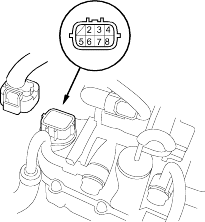

- Disconnect solenoid harness connector (8P).

- Measure CVT speed change control valve assembly resistance between solenoid harness connector terminals No. 3 and No. 7.
STANDARD: 3.8-6.8 ohm;
- Measure CVT pulley pressure control valve assembly resistance between terminals No. 2 and No. 6.
STANDARD: 3.8-6.8 ohm;
- Measure CVT start clutch pressure control valve assembly resistance between terminals No. 4 and No. 8.
STANDARD: 3.8-6.8 ohm;
- Measure the inhibitor solenoid resistance between terminal No. 5 and body ground.
STANDARD: 11.7-21.0 ohm;
- Replace the CVT speed change control valve assembly or CVT start clutch pressure control valve assembly, if the measurements are out of standard. Replace the lower valve body assembly, if the measurements of CVT pulley pressure control valve assembly or inhibitor solenoid are out of standard.
- If all of the resistance are within the standard, a clicking sound should be heard when connecting the battery terminals to the solenoid harness connector terminals below.
- CVT speed change control valve assembly
No. 3 to battery positive terminal
No. 7 to battery negative terminal
- CVT pulley pressure control valve assembly
No. 2 to battery positive terminal
No. 6 to battery negative terminal
- CVT start clutch pressure control valve assembly
No. 4 to battery positive terminal
No. 8 to battery negative terminal
- Inhibitor solenoid
No.5 to battery positive terminal and body ground to negative terminal
- If no clicking sound is heard, remove the lower valve body assembly and check the solenoid.